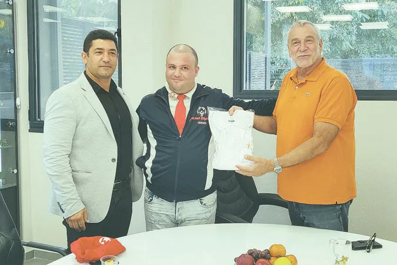
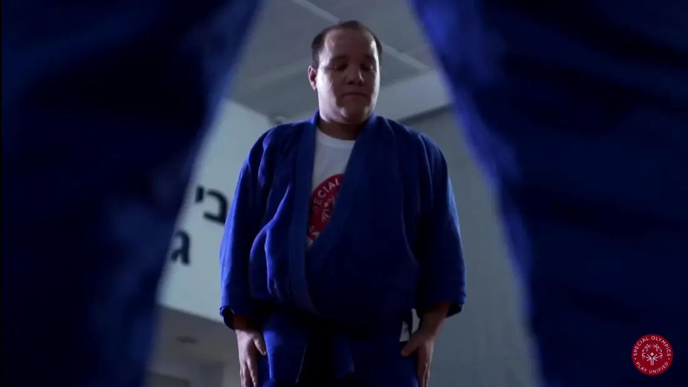

ספיישל אולימפיקס ישראל
מעצב גרפי ונציג הספורטאים בוועד המנהל

על הפרויקט
בשנות ה-70 הצטרפה ישראל לארגון תחת דגל אקים — אגודה לקימום אנשים עם מוגבלות שכלית — והחלה לצאת לתחרויות בחו"ל ולקיים מסגרות פעילות בענפי השחייה, הכדורגל והכדורסל. בשנת 1987 נוסדה עמותת ספיישל אולימפיקס ישראל.
כיום רשומים כ-3,000 ספורטאים בענפים רבים, בהם שחייה, כדורגל, כדורסל, טניס, טניס שולחן, באולינג, ג'ודו, רכיבת אופניים ואתלטיקה קלה. במשחקי ספיישל אולימפיקס בלוס אנג'לס 2015 מנתה המשלחת הישראלית 40 ספורטאים והשיגה 62 מדליות. בספטמבר 2016 התקיים טורניר "המשחקים הלאומיים" ברובו במכון וינגייט בנתניה, בהשתתפות כ-1,200 ספורטאים ב-11 ענפי ספורט.
בשנת 2018 העביר האיגוד האירופי-אסייתי את הארגון להנהלה חדשה בראשות שי פירון כיו"ר, ולצידו הג'ודוקא אריק זאבי בוועד המייעץ, והארגון יצא לדרך בשם "הארגון הישראלי לספורט משלב". באותה שנה הצטרפתי כמעצב גרפי ונציג הספורטאים בוועד המנהל, ובמקביל כספורטאי בפעילויות העמותה.
בספטמבר 2018 ייצגתי את ישראל בפורום מנהיגות הנוער הגלובלי, במסגרת חגיגות ה-50 שנה לארגון. בנובמבר 2018 הנחיתי את אירוע ההשקה בבית הנשיא בירושלים, שאירח הנשיא ראובן ריבלין. במשחקי אבו דאבי במרץ 2019 מנתה המשלחת הישראלית 25 ספורטאים ו-7 מאמנים ב-4 ענפים וזכתה ב-22 מדליות. לצד ייצוג הספורטאים, אני תומך בתחום הגרפי-שיווקי של הארגון, בהם פרויקט הספורט המשלב.
לאתר הרשמיפלטת צבעים
מהפרויקט


אהבתם מה שראיתם?
בואו נעצב יחד את המותג הבא.
יצירת קשר